캐릭터·아이템 만드는 법
동작마다 PNG 한 장. 프레임을 가로로 이어 붙여요.
스킬로 만들기 · 가장 쉬워요
스킬 zip 을 Claude·ChatGPT·Gemini 에 올리고 사진을 주면 그림을 보여 주며 같이 고치고, 바로 넣을 zip 을 줘요.
스킬 받고 쓰는 법규격 복사해서 부탁하기
이 페이지 규격을 마크다운으로 복사해 ChatGPT·Claude 에 붙여 넣으면 이 규격대로 만들어 줘요.
올리기
트레이 메뉴 "캐릭터 > 만들기…"에서 캐릭터·아이템·이모트 탭을 고르고 "+ 새로 만들기". 이름(20자까지)을 쓰고 동작마다 PNG 를 고르거나 그 칸에 끌어다 놓아요. fps 는 권장값이 채워져 있어요. 아이템은 종류(던질 것·먹이·응가)와 효과음 wav 도 고를 수 있어요. 저장하면 내 목록에 생기고, 같은 곳에서 고치거나 지워요. 캐릭터 바꾸기·아이템·이모트 고르기 창 맨 앞 + 카드를 눌러도 그 종류 만들기가 열려요.
친구 화면에는 친구가 트레이 "캐릭터 > 바꾸기…" 창을 열거나 트레이 "새 캐릭터·아이템 받기"를 누를 때 들어가요. 내가 고른 캐릭터는 바로 보여요.
먹이 아이템은 친구를 우클릭해 "먹이"에서 고른 뒤 친구를 클릭하면 날아가요. 다시 "던질 것"을 고를 때까지 클릭마다 먹이를 줘요.
응가 아이템은 fly 그림이 바닥에 떨어진 응가로 그려져요(던지거나 먹이로 쓰이지 않아요). 고른 응가로 내 캐릭터가 배부를 때 응가해요. 친구가 아직 안 받은 응가는 받을 때까지 기본 응가로 보여요.
이모트
"이모트" 탭에서 GIF·WebP·APNG·PNG·JPG 를 골라요. 앱이 64px 로 줄이고 16프레임까지 골라 원래 속도대로 저장해요(원본 20MB, 가로·세로 2048px 까지). 이름은 20자까지고 그룹 안에서 겹치면 안 돼요. : 와 공백은 메시지 속 :이름: 이 끊겨서 못 쓰고, 기본 이모트 이름(하트·물음표·느낌표·화남·ㅋㅋ·음표)도 못 써요.
쓰는 곳: 내 캐릭터를 누르면 뜨는 메뉴의 '이모트'(⌃⌥⌘E, Windows 는 Ctrl+Alt+E) 고르기 창은 머리 위에 띄워요. 메시지에 : 를 치면 이름이 떠서 고르면 말풍선 안에 :이름: 으로 들어가요. 상태·닉네임·비밀번호 창 '상태' 탭의 이모지 버튼으로 상태에도 넣어요. 대화 기록에서 말에 반응으로도 붙여요. 같은 그룹 친구만 보여요.
규격
- 프레임 48×48, 동작당 최대 8프레임 (4프레임이면 192×48)
- 투명 배경, 파일당 200KB 이하 (넘으면 앱이 다시 저장해 줄여요. 효과음 wav 는 50KB)
- 오른쪽을 보게 그려요(왼쪽은 앱이 뒤집어요)
- 캐릭터와 응가는 맨 아래 줄에 닿게, 가로 가운데. 던질 것·먹이는 프레임 가운데
- 캐릭터는 48칸을 넉넉히 채워요(칠한 칸 800~1200개, 높이 30~46칸, 몸이 가늘면 더 크게). 앱이 키우지 않아서 작게 그리면 친구 캐릭터 옆에서 작아 보여요
캐릭터 동작
idle, walk, sleep 만 있으면 돼요. 나머지는 없으면 대신 쓰는 동작이 있어요. offline 이 없으면 오프라인일 때 돌로 바뀌어요.
| 동작 | 언제 | 권장 | 없으면 |
|---|---|---|---|
idle 필수 | 가만히 | 2장, 2fps | |
walk 필수 | 걸을 때 | 4장, 6fps | |
sleep 필수 | 30분 자리 비움 또는 화면 잠금 (Zzz 는 앱이 그림) | 2장, 1fps | |
poked | 콕 찔림 | 2장, 8fps | idle |
throw | 던질 때 | 3장, 10fps | idle |
hit | 맞았을 때 | 2장, 8fps | poked |
jump | 피할 때, 점프 동작 | 2장, 8fps | idle |
eat | 먹이 받을 때, 냠냠 동작 | 3장, 6fps | happy |
wave | 친구 접속 인사, 안녕 동작 | 3장, 6fps | happy |
happy | 쓰다듬기, 기쁨 동작 | 2장, 4fps | idle |
offline | 오프라인(쓰러진 모습) | 1장, 1fps | 돌 |
아이템 동작
| 동작 | 언제 | 권장 | 없으면 |
|---|---|---|---|
fly 필수 | 날아가는 동안. 만들기 창 '날아갈 때 돌리기'를 켜면 앱이 돌려 줘요(새로 만들면 꺼져 있어요). 끈 던질 것은 날아가는 쪽을 보며 똑바로 날아가니 오른쪽을 보게, 끈 먹이는 그린 그대로 날아가니 똑바로 선 채로 그려요. 멈춰 보이지 않게 프레임으로 움직임을 주면 돼요(예: 통통 튀기, 반짝임). 응가는 바닥에 놓인 모습 | 던질 것 1장, 먹이 1~4장, 12fps (응가는 1장) | |
impact | 맞는 순간 (던질 것만, 먹이는 바로 먹어요) | 3장, 12fps | 앱이 그리는 별 터짐 |
효과음 wav 는 닿는 순간(응가는 떨어질 때) 울려요. 없으면 던질 것·먹이는 소리가 안 나고, 응가는 앱이 '뿡' 소리를 내요.
예시: 뿅망치
기본 아이템이에요. fly 는 한 장뿐이지만 날아가는 동안 돌아요(먹이는 안 돌아요).
| 동작 | 움직임 | 올리는 모양 (4배 확대) |
|---|---|---|
fly날아가는 동안 | 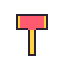 | |
impact맞는 순간 | 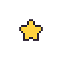 | 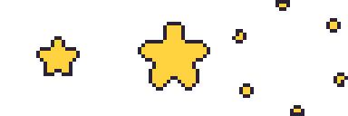 |
실제 크기로 받기: fly, impact, 전체 받기(zip)


응가
응가 아이템은 fly 한 장이면 돼요. 바닥에 놓인 모습으로, 회전 없이 그려져요. 앱이 줄이지 않고 48×48 칸 그대로 그리니 프레임 아래 가운데에 작게(기본 응가는 폭 17·높이 12칸) 그리고 위는 비워 둬요. 똥 모양이 아니어도 돼요. 캐릭터에 맞는 작은 소품(미니 호박, 관, 털실 등)도 아래 가운데 24×24 안이면 돼요. 아래는 기본 응가예요.
| 동작 | 움직임 | 올리는 모양 (4배 확대) |
|---|---|---|
fly바닥에 놓인 모습 | 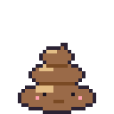 |
실제 크기로 받기: fly

예시: 떠기
펭귄 인형을 보고 만든 떠기의 모든 동작이에요. 위 표의 권장 장수 그대로고, 같은 몸에 포즈만 바꿔 그려서 동작끼리 모양이 어긋나지 않아요.
| 동작 | 움직임 | 올리는 모양 (4배 확대) |
|---|---|---|
idle가만히 | 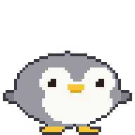 | 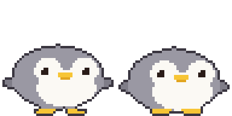 |
walk걸을 때 | 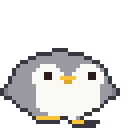 | 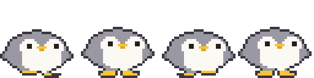 |
sleep잠 | 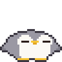 | 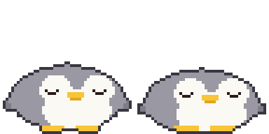 |
poked콕 찔림 | 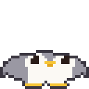 | 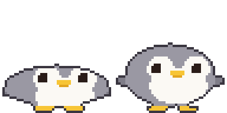 |
throw던질 때 | 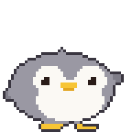 | 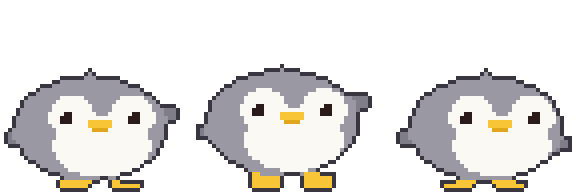 |
hit맞았을 때 | 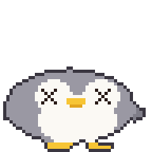 | 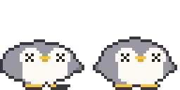 |
jump피할 때·점프 | 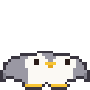 | 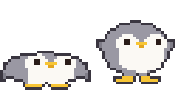 |
eat먹이 받을 때 | 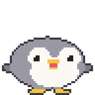 | 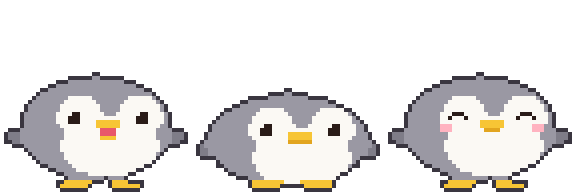 |
wave인사 | 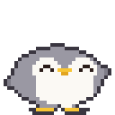 | 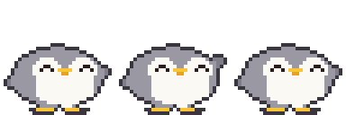 |
happy쓰다듬기 | 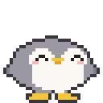 | 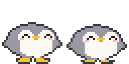 |
offline오프라인 | 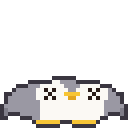 |
실제 크기로 받기: idle, walk, sleep, poked, throw, hit, jump, eat, wave, happy, offline, 전체 받기(zip)


템플릿
만들기 창의 "템플릿 받기"로 동작마다 앱 햄찌(아이템은 도토리) 예시가 들어간 템플릿을 받을 수 있어요. 빈 템플릿은 여기서: 2프레임, 4프레임, 8프레임, 전체 받기(zip)


아래 레이어로 깔고 그린 뒤 템플릿 레이어는 끄고 저장해요. 빨간 줄이 발 기준선이에요.
그리는 도구: Piskel(웹, 무료), LibreSprite(무료), Aseprite(유료)
AI 로 만들기
이미지 AI 는 48픽셀을 정확히 못 지켜요. 크게 만들고 줄여서 다듬어요.
- 아래 프롬프트로 생성
- 프레임별로 48×48 로 줄이기. 보간 방식은 꼭 최근접 이웃(Nearest Neighbor), 아니면 흐려져요.
- 배경 투명 처리, 프레임 위치 맞추기
설치 없이 브라우저에서:
- Photopea(무료, 포토샵과 비슷): 줄이기는 "이미지 > 이미지 크기"에서 리샘플을 Nearest Neighbor 로. 배경은 자동 선택 도구(허용치 0, 안티 앨리어스 끔)로 배경을 누르고 Delete, PNG 로 내보내기.
- remove.bg(무료): 배경만 지울 때. 가장자리가 흐려질 수 있어 줄이기 전 큰 이미지에 써요.
기본 모습
Pixel art sprite of a cute [animal], side view facing right, full body, match the body shape, proportions and features of the attached picture if any (otherwise the real proportions of that animal or character), on a 48x48 pixel grid, upscaled so one art pixel is a clean 16x16 block (768x768 per frame), hard edges, no anti-aliasing, no gradients, no dithering, about 8 colors, 1px dark outline, flat shading, transparent background, fills most of the grid (about 30-46 pixels tall), feet on the bottom row, horizontally centered, nothing touching the top or side edges, no shadow, no text
동작 시트 (위 결과를 참고 이미지로 함께)
Pixel art sprite sheet of the same character, [N] frames in one horizontal row, no gaps, facing right, animation: [motion], each frame on a 48x48 pixel grid, upscaled so one art pixel is a clean 16x16 block (768x768 per frame), hard edges, no anti-aliasing, no gradients, no dithering, same palette (about 8 colors) as the reference, 1px dark outline, same size and position in every frame, feet on the bottom row, transparent background, the 4 corner pixels of every frame transparent, nothing touching the top or side edges, no shadow, no text
| 동작 | [N] | [motion] | 떠기 |
|---|---|---|---|
idle | 2 | gentle breathing, body down 1px in frame 2 | |
walk | 4 | walk cycle: left foot forward, body up, right foot forward, body up | |
sleep | 2 | eyes closed, body rises and falls 1px | |
poked | 2 | squashed flat, then back to normal | |
throw | 3 | wind up, then swing one arm forward | |
hit | 2 | knocked back, dizzy swirl eyes | |
jump | 2 | crouch, then stretch up | |
eat | 3 | mouth open, chewing, cheeks puffed | |
wave | 3 | one paw raised, waving | |
happy | 2 | smiling closed eyes, tiny heart | |
offline | 1 | knocked out, squashed flat on the ground, X eyes |
아이템
Pixel art game item, [item], one single frame on a 48x48 pixel grid, upscaled so one art pixel is a clean 16x16 block (768x768), hard edges, no anti-aliasing, no gradients, no dithering, centered in the frame, about 8 colors, 1px dark outline, transparent background, the 4 corner pixels transparent, no shadow, no text
던질 것의 impact 는 따로 그려요(먹이·응가는 없어요):
Pixel art impact effect sprite sheet, 3 frames in one horizontal row, no gaps, a star bursting from the center of the frame and breaking into pieces, each frame on a 48x48 pixel grid, upscaled so one art pixel is a clean 16x16 block (768x768 per frame), hard edges, no anti-aliasing, no gradients, no dithering, centered in every frame, about 8 colors, 1px dark outline, transparent background, the 4 corner pixels of every frame transparent, no shadow, no text
먹이는 '날아갈 때 돌리기'를 끄면 똑바로 날아가요. 날아가는 동안 움직이게 하려면 여러 장으로:
Pixel art food item, [item], [N] frames in one horizontal row, no gaps, upright in every frame (not spinning), gently bobbing up and down with a small sparkle, each frame on a 48x48 pixel grid, upscaled so one art pixel is a clean 16x16 block (768x768 per frame), hard edges, no anti-aliasing, no gradients, no dithering, centered in every frame, about 8 colors, 1px dark outline, transparent background, the 4 corner pixels of every frame transparent, no shadow, no text
응가
[character] 는 내 캐릭터 이름과 생김새예요(예: "떠기, 회색 펭귄, 노란 부리").
Pixel art of a cute squat swirl poop with a tiny face colored and decorated like [character] (one feature such as ears or beak), or a small prop that matches [character] (for example a mini pumpkin or a coffin), one single frame on a 48x48 pixel grid, upscaled so one art pixel is a clean 16x16 block (768x768), hard edges, no anti-aliasing, no gradients, no dithering, small (about 17x12 pixels), horizontally centered, sitting on the bottom row, entirely inside the bottom-center 24x24 area of the grid (x 12-35, y 24-47), about 8 colors, 1px dark outline, transparent background, no shadow, no text
스킬로 만들기 (가장 쉬워요)
huggybugi-character.zip 을 받아 Claude·ChatGPT·Gemini 에 올리고 사진과 함께 "SKILL.md 대로 이 사진으로 허기부기 캐릭터 만들어줘" 라고 하면, 동작 11개를 그려(원하면 응가·던질 것·먹이도) 아래 '한꺼번에 올리기'로 바로 넣을 zip 을 줘요. AI 가 코드를 실행할 수 있어야 해요(Claude·ChatGPT 는 코드 실행이 되는 모델로). 매번 올리기 번거로우면 스킬로 등록해 두세요. 그다음부턴 사진만 주고 "허기부기 캐릭터 만들어줘" 하면 돼요.
- Claude (웹·앱): 설정의 Capabilities(또는 Customize > Skills) → "Upload skill" 에 zip 그대로. 코드 실행이 켜진 유료 요금제
- ChatGPT: Skills 를 쓸 수 있는 요금제면 Skills → 업로드에 zip 그대로. 아니면 대화마다 zip 을 같이 올려요
- Gemini (웹·앱): Skills 에서 zip 업로드(개인 계정)
- Gemini CLI: zip 을 풀어
huggybugi-character폴더를~/.gemini/skills/에
Claude Code·Codex 는 zip 없이 플러그인으로 설치해요. 새 버전이 나오면 플러그인 업데이트로 같이 바뀌어요.
# Claude Code /plugin marketplace add Zaehyeon2/huggybugi /plugin install huggybugi@huggybugi # Codex codex plugin marketplace add Zaehyeon2/huggybugi codex plugin add huggybugi@huggybugi
메뉴 이름은 서비스가 바꾸기도 해요. 자세한 건 zip 안 README.md.
코드를 실행하는 AI (ChatGPT, Claude 등)
격자가 정확히 나와요. 몸·눈·발을 타원 같은 도형으로 정의하고, 포즈 값(몸 높이, 눈 모양, 발 들기)을 받아 한 장을 그리는 함수 하나로 모든 동작을 만들게 하면 동작끼리 모양이 어긋나지 않아요. 사진이나 그림을 같이 주면 색과 생김새를 따라 그려요.
Write and run a Python (Pillow) script that draws a pixel art [animal] (see the attached picture) for a 48x48 desktop pet. Match the picture's body shape, proportions and features as closely as the grid allows (no picture: the real proportions of that animal). Build each frame from simple shapes (ellipses for body, face, feet) in ONE function draw(pose) that takes pose values like bob, eyes, foot lift, so every animation reuses the same shapes. Add a 1px dark outline automatically around the filled pixels. Facing right, feet touching row 47, the 4 corner pixels transparent. Save one horizontal strip PNG per animation (1x, frames 48x48, no gaps), each file named exactly after the animation (idle.png, walk.png, ...): idle 2, walk 4, sleep 2, poked 2, throw 3, hit 2, jump 2, eat 3, wave 3, happy 2, offline 1. Put all the PNGs in one zip file for download. Show me an 8x preview, then let me ask for changes.
아이템과 응가는 동작이 달라서 위 프롬프트 대신 이걸 써요. 던질 것·먹이 중 내 종류 줄만 남기고 지워요.
Write and run a Python (Pillow) script that draws a pixel art [item] (see the attached picture) for a 48x48 desktop pet app. Build it from simple shapes with a 1px dark outline, transparent background, centered in the frame, the 4 corner pixels of every frame transparent. Save horizontal strip PNGs (1x, frames 48x48, no gaps), keeping only the line for your item kind: thrown item: fly 1 facing right (with 'spin while flying' on, the app spins it, so do not draw spin frames) and impact 3 (the moment it hits). food: fly 1-4 drawn upright (it is not spun), gently bobbing with a small sparkle, no impact (food is eaten on arrival). Name the files exactly fly.png and impact.png and put them in one zip file. Show me an 8x preview, then let me ask for changes.
Write and run a Python (Pillow) script that draws a pixel art poop for a 48x48 desktop pet, colored and decorated like [character] (one feature such as ears or beak), or a small prop that matches [character] instead of a poop. One 48x48 frame saved as fly.png: small (about 17x12 pixels), horizontally centered, sitting on the bottom row, entirely inside the bottom-center 24x24 area (x 12-35, y 24-47), flat and cute, 1px dark outline, transparent background. Show me an 8x preview.
아이템 코드는 대략 이런 모양이에요(뿅망치 fly·impact, 기본 응가). 위 예시의 뿅망치·응가 그림이 이 코드로 나온 것과 같아요. 파일 이름은 동작 이름 그대로 fly.png·impact.png 면 되고, 아래 예시는 두 아이템을 한 번에 그려서 앞에 이름을 붙였어요.
import math
COLORS = {'K': '#2b2233', 'Y': '#ffd23f', 'R': '#ff5a6e', 'F': '#9a6a48', 'N': '#7a4a24',
'E': '#1b1420', 'P': '#ff9fb0'}
N = 48 # 프레임 48x48
def oval(x, y, cx, cy, rx, ry): # 칸 가운데(+0.5)가 타원 안이면
return ((x + 0.5 - cx) / rx) ** 2 + ((y + 0.5 - cy) / ry) ** 2 <= 1
# 칸마다 색 글자를 받아 한 장을 만들고, 바깥 테두리를 1px 검은 선(K)으로 바꾼다.
def render(fill):
g = [[fill(x, y) for x in range(N)] for y in range(N)]
solid = lambda x, y: 0 <= x < N and 0 <= y < N and g[y][x] != '.'
return [''.join('K' if c != '.' and not (solid(x - 1, y) and solid(x + 1, y)
and solid(x, y - 1) and solid(x, y + 1)) else c
for x, c in enumerate(row)) for y, row in enumerate(g)]
# 뿅망치: fly 한 장('날아갈 때 돌리기'를 켜면 앱이 돌린다)
def hammer(x, y):
if 12 <= x <= 35 and 10 <= y <= 21:
return 'Y' if x <= 14 or x >= 33 else 'R'
if 21 <= x <= 26 and 22 <= y <= 41:
return 'Y'
return '.'
# impact: 별이 커졌다가 조각으로 흩어진다(3장)
def star(r):
def fill(x, y):
dx, dy = x + 0.5 - 24, y + 0.5 - 24
a = math.atan2(dy, dx) + math.pi / 2
edge = r * (0.55 + 0.45 * abs(math.cos(a * 5 / 2)))
return 'Y' if math.hypot(dx, dy) <= edge else '.'
return fill
def burst(color, k, n=6):
def fill(x, y):
r, s = 10 + k * 5, 4.4 - k * 0.45
for i in range(n):
a = i / n * math.pi * 2 + k * 0.2
if oval(x, y, 24 + math.cos(a) * r, 24 + math.sin(a) * r, s, s):
return color
return '.'
return fill
# 응가: fly 한 장. 맨 아랫줄에 닿는 3단 똬리, 아래 단에 눈·볼·입
TIERS = [(23.5, 38.8, 3.4, 1.9), (23.5, 41.9, 5.8, 2.2), (23.5, 44.9, 8.1, 3.1)]
DOTS = {(22, 36): 'F', (23, 36): 'F', (24, 36): 'F', (20, 44): 'E', (26, 44): 'E',
(18, 45): 'P', (19, 45): 'P', (27, 45): 'P', (28, 45): 'P',
(22, 46): 'N', (23, 46): 'N', (24, 46): 'N'}
def poop(x, y):
if (x, y) in DOTS:
return DOTS[(x, y)]
for i, (cx, cy, rx, ry) in enumerate(TIERS):
if oval(x, y, cx, cy, rx, ry):
# 위 단 아래 끝은 아래 단 위에 얹힌 홈
return 'N' if i < len(TIERS) - 1 and y >= cy + ry - 1.1 else 'F'
return '.'
ANIMS = {
'hammer-fly': [render(hammer)],
'hammer-impact': [render(star(9)), render(star(15)), render(burst('Y', 2))],
'poop-fly': [render(poop)],
}
# 동작마다 가로 스트립 PNG 한 장(1배, 프레임 48x48)
def save(name, frames):
from PIL import Image, ImageColor
img = Image.new('RGBA', (N * len(frames), N))
for i, g in enumerate(frames):
for y, row in enumerate(g):
for x, c in enumerate(row):
if c != '.':
img.putpixel((i * N + x, y), ImageColor.getrgb(COLORS[c]))
img.save(name + '.png')
if __name__ == '__main__':
for name, frames in ANIMS.items():
save(name, frames)
AI 가 쓰는 코드는 대략 이런 모양이에요(떠기, 11개 동작 전부). 위 예시의 떠기 그림이 이 코드로 나온 것과 같아요. Pillow 가 있으면 실행해서 동작마다 PNG 가 저장돼요.
import math
COLORS = {'K': '#3a3640', 'G': '#9a98a3', 'g': '#7f7d88', 'W': '#fbf9f4', 'Y': '#f7c535',
'y': '#e2a51f', 'E': '#2a1c18', 'P': '#ffb3c0', 'R': '#e8586a'}
N = 48 # 프레임 48x48
S = 1.5 # 32칸으로 정한 치수를 48칸으로
def rnd(v): # 0.5 는 올림(파이썬 round 는 짝수 쪽으로 가서 쓰지 않는다)
return math.floor(v + .5)
def u(v): # 포즈 이동량을 48칸 정수로
return int(math.copysign(rnd(abs(v) * S), v)) if v else 0
def oval(x, y, cx, cy, rx, ry):
return ((x + .5 - cx) / rx) ** 2 + ((y + .5 - cy) / ry) ** 2 <= 1
def tri(x, y, a, b, c):
px, py = x + .5, y + .5
s = lambda p, q: (px - q[0]) * (p[1] - q[1]) - (p[0] - q[0]) * (py - q[1])
d = (s(a, b), s(b, c), s(c, a))
return not (min(d) < 0 and max(d) > 0)
# 눈 한쪽(3x3 기준). dx, dy 는 눈 왼쪽 위에서 떨어진 칸
def eye(dx, dy, kind):
if kind == 'open':
return ('W' if dx == dy == 0 else 'E') if 0 <= dx <= 2 and 0 <= dy <= 2 else None
if kind == 'wide': # 놀람: 4x4 에 하이라이트
return ('W' if dx == dy == -1 else 'E') if -1 <= dx <= 2 and -1 <= dy <= 2 else None
hit = {'closed': (dy == 1 and dx in (-1, 3)) or (dy == 2 and 0 <= dx <= 2),
'happy': (dy == 0 and 0 <= dx <= 2) or (dy == 1 and dx in (-1, 3)),
'hurt': -1 <= dx <= 3 and -1 <= dy <= 3 and (dx == dy or dx == 2 - dy)}[kind]
return 'E' if hit else None
# 포즈 값만 받아 한 장을 그린다. 모든 동작이 같은 모양을 쓴다.
# squash: + 납작, - 길쭉. feet: 발 들기. flip: 날개 올리기. lean: 몸 좌우 이동
def draw(bob=0, squash=0, feet=(0, 0), flip=(0, 0), eyes='open', mouth='', blush=False, lean=0):
ry = (9 - squash) * S
rx = min((13 + squash * .8) * S, 22.4) # 눌린 몸이 칸 밖으로 안 나가게
by = (30.4 + min(bob, 1)) * S - ry + max(bob - 1, 0) * S
cx = min(max((16 + lean) * S, rx + 1.4), 46.6 - rx)
wl, wr = max(cx - rx + .3 * S, 4.5), min(cx + rx - .3 * S, 43.5)
fy = by + 1.5 * S
ey = rnd(by - 3 * S)
shift = 3 + u(lean) # 얼굴은 3칸 오른쪽을 본다
gy = rnd((30 + min(bob, 0)) * S) - u(max(feet))
def foot(fcx, x, y, up):
b = 47 - u(up)
return b - 2 + min(0, u(bob + up)) <= y <= b and abs(x + .5 - fcx) <= (3.5 if y == b else 4.8)
def pixel(x, y):
body = oval(x, y, cx, by, rx, ry) or tri(
x, y, (cx - 3.5 * S, by - ry + 2 * S), (cx + 3.5 * S, by - ry + 2 * S), (cx, by - ry - .8 * S))
fin = oval(x, y, wl, fy - flip[0] * S, 2.6 * S, 1.8 * S) or oval(x, y, wr, fy - flip[1] * S, 2.6 * S, 1.8 * S)
paw = foot(18.5, x, y, feet[0]) or foot(31.5, x, y, feet[1])
# 인형처럼 발이 몸 앞으로 나와 보이게 몸보다 먼저 칠한다
if paw and y >= gy:
return 'Y'
if not body:
return 'g' if fin else 'Y' if paw else '.'
fx = x - shift
e = eye(fx - 14, y - ey, eyes) or eye(fx - 31, y - ey, eyes)
if e:
return e
if y in (ey + 2, ey + 3) and 21 <= fx <= 26: # 부리
return 'Y'
if mouth == 'open': # 먹을 땐 벌어져 입속이 보인다
if ey + 4 <= y <= ey + 5 and 22 <= fx <= 25:
return 'R'
if y == ey + 6 and 22 <= fx <= 25:
return 'Y'
elif y == ey + 4 and (21 if mouth == 'chew' else 22) <= fx <= (26 if mouth == 'chew' else 25):
return 'y'
if blush and y in (ey + 3, ey + 4) and (11 <= fx <= 13 or 34 <= fx <= 36):
return 'P'
face = (oval(fx, y, 11 * S + .5, by - 2 * S, 3.8 * S, 3.6 * S)
or oval(fx, y, 21 * S + .5, by - 2 * S, 3.8 * S, 3.6 * S)
or oval(fx, y, 16 * S + .5, by + 3 * S, 8.2 * S, 5.2 * S))
return 'W' if face else 'G'
g = [[pixel(x, y) for x in range(N)] for y in range(N)]
solid = lambda x, y: 0 <= x < N and 0 <= y < N and g[y][x] != '.'
edge = lambda x, y: not all(solid(x + a, y + b) for a, b in ((1, 0), (-1, 0), (0, 1), (0, -1)))
return [''.join('K' if c != '.' and edge(x, y) else c for x, c in enumerate(row)) for y, row in enumerate(g)]
ANIMS = {
'idle': [draw(), draw(bob=1)],
'walk': [draw(feet=(1, 0), lean=-1), draw(bob=-1), draw(feet=(0, 1), lean=1), draw(bob=-1)],
'sleep': [draw(eyes='closed', bob=1, squash=1), draw(eyes='closed', bob=2, squash=1)],
'poked': [draw(eyes='wide', squash=3), draw(eyes='wide')],
'throw': [draw(flip=(0, 4), lean=-1), draw(flip=(0, 5), lean=-1, bob=-1), draw(flip=(0, -1), lean=1)],
'hit': [draw(eyes='hurt', lean=-2, squash=1), draw(eyes='hurt', bob=1)],
'jump': [draw(squash=3, flip=(-1, -1)), draw(bob=-3, squash=-1, feet=(2, 2), flip=(3, 3))],
'eat': [draw(mouth='open'), draw(mouth='chew', bob=1, squash=1), draw(eyes='happy', blush=True)],
'wave': [draw(flip=(0, 3), eyes='happy'), draw(flip=(0, 6), eyes='happy'), draw(flip=(0, 3), eyes='happy')],
'happy': [draw(eyes='happy', blush=True, bob=-1), draw(eyes='happy', blush=True)],
'offline': [draw(eyes='hurt', squash=3, bob=1, flip=(-1, -1))],
}
# 동작마다 가로 스트립 PNG 한 장(1배, 프레임 48x48)
def save(name, frames):
from PIL import Image, ImageColor
img = Image.new('RGBA', (N * len(frames), N))
for i, g in enumerate(frames):
for y, row in enumerate(g):
for x, c in enumerate(row):
if c != '.':
img.putpixel((i * N + x, y), ImageColor.getrgb(COLORS[c]))
img.save(name + '.png')
if __name__ == '__main__':
for name, frames in ANIMS.items():
save(name, frames)
한꺼번에 올리기
PNG 를 zip 하나로 묶어 만들기 창에 끌어다 놓거나 "한꺼번에 넣기(.zip)…"로 고르면 칸마다 한 번에 들어가요. 넣기 전에 파일마다 들어갈 칸을 보여 주고, 이름이 안 맞는 파일은 직접 칸을 골라요. 위 "전체 받기" zip 도 이 이름이라 그대로 넣어 볼 수 있어요.
파일 이름은 동작 이름 그대로예요. 대소문자는 상관없고, zip 안 폴더는 있어도 돼요.
- 캐릭터:
idle.pngwalk.pngsleep.pngpoked.pngthrow.pnghit.pngjump.pngeat.pngwave.pnghappy.pngoffline.png - 아이템:
fly.pngimpact.png, 효과음sound.wav(응가는fly.png하나)
올리기 전 확인
- 높이 48, 너비 48의 배수, 8프레임 이하
- 배경 투명, 템플릿 선 없음
- 칸마다 네 모서리가 다 칠해지지 않음 (다 칠해지면 배경이 남은 걸로 보고 막아요)
- 오른쪽을 보고, 발이 맨 아래, 프레임마다 위치 같음